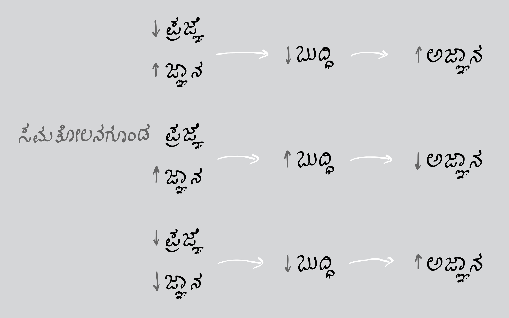

☀︎
An equation has no meaning for me unless it expresses a thought of god.
- Srinivasa Ramanujan
• April 20, 2026
NEW POST! - "The Curse of Nationality" will be posted on May 1, 2026.
This boring blog brings together a range of personal thoughts and reflections that may not seem important at first, but come from a genuine place of curiosity. It explores ideas that often go unnoticed, along with questions that people rarely stop to think about. Some of these thoughts try to find meaning where there may not be clear answers, while others simply exist as open reflections without any conclusion. The writing moves between philosophy, everyday life, and perspectives on whatever nonsense that pops in my brain, creating a space where simple, random, and sometimes uncertain ideas can be shared freely.
Every posts as of today are available in 2 languages (Kannada, English). Click on the button to read in your choice of language. Posts in Telugu, Tamil, Marathi, Bangla, Tulu will be created soon.
Be ready to read them!
11:12 | April 13, 2026

Most people strongly believe that the more we know about anything or everything, the better we become, not only for ourselves but also for the people around us. At first glance, this belief feels completely correct and even comforting. When we slowly begin to widen our perspective beyond the boundaries of daily life, something deeper begins to emerge. If we are not limited only to this short span of life but start thinking in a much larger sense, even beyond life itself, then new questions naturally arise. What happens to all the knowledge we collect when life ends? Where do all our thoughts go when the body can no longer function? Do they simply vanish without meaning or continuation? And even before birth, when none of this knowledge existed for us, what exactly was that state? These questions are not meant to...
Read more...ಈ ನಿರಸವಾದ ಬರಹಸಂಕಲನದಲ್ಲಿ, ಮೊದಲ ನೋಟಕ್ಕೆ ಪ್ರಮುಖವಾಗದಂತೆ ಕಾಣಬಹುದಾದ ನನ್ನ ವೈಯಕ್ತಿಕ ಆಲೋಚನೆಗಳು ಮತ್ತು ಮನನಗಳನ್ನು ನಾನು ಒಂದಾಗಿ ಸೇರಿಸುತ್ತೇನೆ; ಆದರೆ ಅವು ನಿಜವಾದ ಕುತೂಹಲದಿಂದ ಮೂಡಿವೆ. ಸಾಮಾನ್ಯವಾಗಿ ಗಮನಕ್ಕೆ ಬಾರದ ವಿಚಾರಗಳನ್ನೂ, ಜನರು ವಿರಳವಾಗಿ ಯೋಚಿಸುವ ಪ್ರಶ್ನೆಗಳನ್ನೂ ನಾನು ಇಲ್ಲಿ ಪರಿಶೀಲಿಸುತ್ತೇನೆ. ನನ್ನ ಕೆಲವು ಆಲೋಚನೆಗಳು ಸ್ಪಷ್ಟ ಉತ್ತರಗಳಿಲ್ಲದ ಸ್ಥಳಗಳಲ್ಲಿ ಅರ್ಥವನ್ನು ಹುಡುಕಲು ಪ್ರಯತ್ನಿಸುತ್ತವೆ; ಇನ್ನಾವುವೋ ಯಾವುದೇ ಅಂತಿಮ ನಿರ್ಣಯವಿಲ್ಲದೆ ತೆರೆದ ಮನನಗಳಾಗಿ ಉಳಿಯುತ್ತವೆ. ನನ್ನ ಈ ಬರವಣಿಗೆ ತತ್ತ್ವಚಿಂತನೆ, ದೈನಂದಿನ ಜೀವನ ಮತ್ತು ನನ್ನ ಮನಸ್ಸಿನಲ್ಲಿ ಏನೆಲ್ಲಾ ಅಸಂಬದ್ಧವಾಗಿ ಮೂಡುತ್ತವೆಯೋ ಅವುಗಳ ಕುರಿತು ವಿವಿಧ ದೃಷ್ಟಿಕೋಣಗಳ ನಡುವೆ ಸಂಚರಿಸುತ್ತಾ, ಸರಳ, ಯಾದೃಚ್ಛಿಕ ಮತ್ತು ಕೆಲವೊಮ್ಮೆ ಅನಿಶ್ಚಿತವಾದ ಆಲೋಚನೆಗಳನ್ನು ಮುಕ್ತವಾಗಿ ಹಂಚಿಕೊಳ್ಳಲು ಒಂದು ವಾತಾವರಣವನ್ನು ನಿರ್ಮಿಸುತ್ತದೆ.
ಇಂದಿನ ದಿನಾಂಕದವರೆಗೆ ಇರುವ ಪ್ರತಿಯೊಂದು ಲೇಖನವೂ ಎರಡು ಭಾಷೆಗಳಲ್ಲಿ (ಕನ್ನಡ, ಇಂಗ್ಲಿಷ್) ಲಭ್ಯವಿದೆ. ನಿಮಗೆ ಇಚ್ಛೆಯಿರುವ ಭಾಷೆಯಲ್ಲಿ ಓದಲು ಬಟನ್ ಮೇಲೆ ಕ್ಲಿಕ್ ಮಾಡಿ. ತೆಲುಗು, ತಮಿಳು, ಮರಾಠಿ, ಬಾಂಗ್ಲಾ ಮತ್ತು ತುಳು ಭಾಷೆಗಳಲ್ಲಿನ ಲೇಖನಗಳನ್ನು ಶೀಘ್ರದಲ್ಲೇ ಸಿದ್ಧಪಡಿಸಲಾಗುವುದು.
ಲೇಖನವನ್ನು ಓದಲು ಸಿದ್ಧರಾಗಿ!
೧೧:೧೨ | ಏಪ್ರಿಲ್ ೧೩, ೨೦೨೬

ಅನೇಕ ಜನರು, ಯಾವುದಾದರೂ ವಿಷಯದ ಬಗ್ಗೆ ಹೆಚ್ಚು ತಿಳಿದಷ್ಟೂ ನಾವು ಉತ್ತಮರಾಗುತ್ತೇವೆ ಎಂದು ದೃಢವಾಗಿ ನಂಬುತ್ತಾರೆ. ಅದು ನಮಗಷ್ಟೇ ಅಲ್ಲ, ನಮ್ಮ ಸುತ್ತಲಿನ ಜನರಿಗೂ ಸಹ ಉಪಯುಕ್ತವಾಗುತ್ತದೆ. ಮೊದಲ ದೃಷ್ಟಿಯಲ್ಲಿ ಈ ನಂಬಿಕೆ ಸಂಪೂರ್ಣವಾಗಿ ಸರಿಯೆಂದು ಹಾಗೂ ಮನಸ್ಸಿಗೆ ಸಮಾಧಾನಕಾರಿಯೆಂದು ಕಾಣುತ್ತದೆ. ಆದರೆ, ನಾವು ನಿಧಾನವಾಗಿ ದೈನಂದಿನ ಜೀವನದ ಮಿತಿಗಳನ್ನು ಮೀರಿ ವಿಶಾಲವಾದ ದೃಷ್ಟಿಕೋಣವನ್ನು ಅಳವಡಿಸಿಕೊಳ್ಳಲು ಪ್ರಾರಂಭಿಸಿದಾಗ, ಇನ್ನಷ್ಟು ಆಳವಾದ ವಿಚಾರಗಳು ಹೊರಹೊಮ್ಮುತ್ತವೆ. ನಾವು ಈ ಚಿಕ್ಕ ಜೀವನಾವಧಿಗೆ ಮಾತ್ರ ಸೀಮಿತವಾಗದೇ, ಜೀವನದಾಚೆಯೂ ಚಿಂತನೆ ನಡೆಸಿದರೆ, ಸಹಜವಾಗಿಯೇ ಹೊಸ ಪ್ರಶ್ನೆಗಳು ಉದ್ಭವಿಸುತ್ತವೆ. ಜೀವನ ಮುಗಿದ ನಂತರ ನಾವು ಸಂಗ್ರಹಿಸಿದ ಜ್ಞಾನಕ್ಕೆ ಏನಾಗುತ್ತದೆ? ದೇಹವು ಕಾರ್ಯನಿರ್ವಹಿಸಲು ಸಾಧ್ಯವಾಗದಾಗ ನಮ್ಮ ಚಿಂತನೆಗಳು ಎಲ್ಲಿಗೆ ಸೇರುತ್ತವೆ? ಅವು ಯಾವುದೇ ಅರ್ಥವಿಲ್ಲದೆ ನಶಿಸಿಹೋಗುತ್ತವೆಯೇ? ಜನ್ಮಕ್ಕೂ ಮುನ್ನ, ಈ ಜ್ಞಾನ ಯಾವುದೂ ನಮ್ಮಲ್ಲಿರದ ಸಂದರ್ಭದಲ್ಲಿ, ಆ ಸ್ಥಿತಿ ಏನು? ಅದರ ಅಸ್ತಿತ್ವದಲ್ಲಿನ ನಿಜವಾದ ಸ್ಥಾನವನ್ನು ಅರಿಯಲು...
ಇನ್ನಷ್ಟು ಓದಿ...
Pramod Koushik is a coder who decodes mathematics from philosophy and debugs the miscalculations of thoughts or idealogies...
Read more..